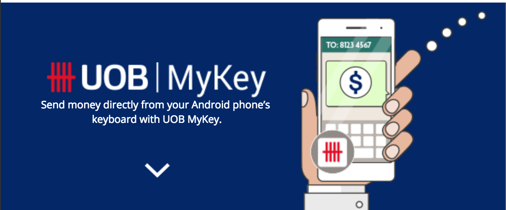
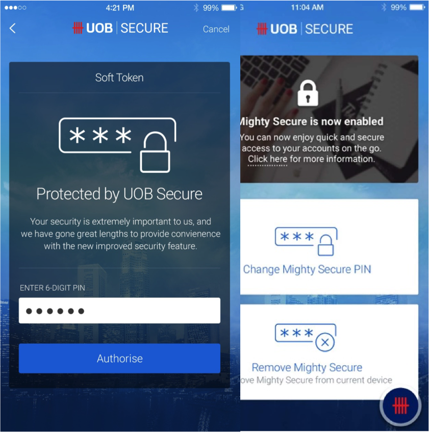
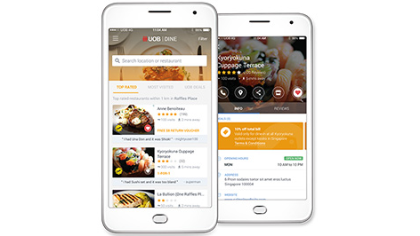
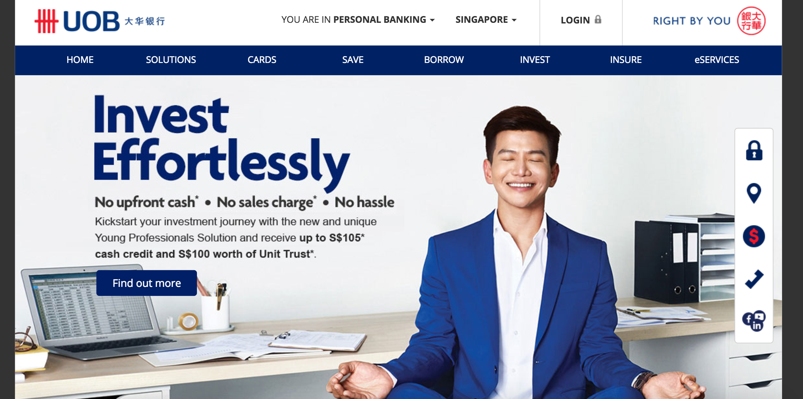
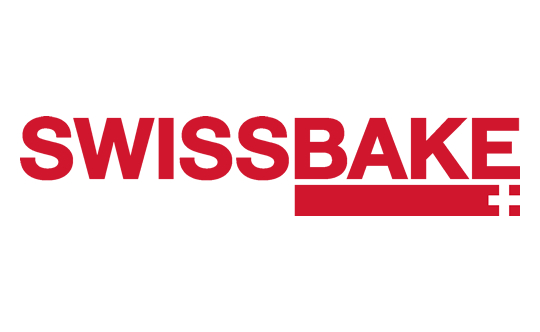
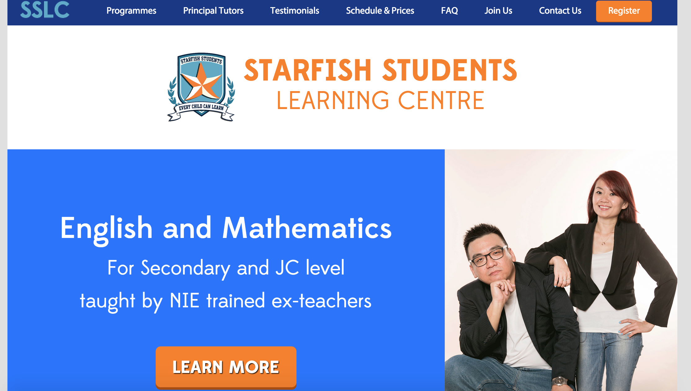
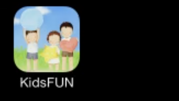

UOB MyKey for PayNow
With the implementation of PayNow, customers from 7 banks in Singapore can now transfer money to each other using either mobile number or NRIC. To further make the experience seamless, my team created a UOB MyKey feature for all UOB customers. This makes UOB the first bank in Singapore that lets our customers send money using any messaging app. Now customers can pay each other anywhere, anytime. Watch how it works here.

UOB Mighty Secure
Turning customer's mobile phone into the new SecurePlus token. I was part of the team that worked on this new UOB Mighty Secure feature. This new feature allows customers to turn their mobile device into the new banking token. This improves the mobile banking experience, turning it easier and safer.

UOB Mighty Dine
The UOB Mighty Dine feature allows customers to search, book, rate and review restaurants. It also lists all dining deals that are specially for UOB cardholders only. I was part of the Mighty Dine team to brainstorm new ideas for the existing feature, and improve on the overall UI/UX. With the Mighty Dine feature, customers now can look for dining deals at their finger tips without having to worry about missing out on the latest deals.

UOB Public Website
With the increasing adoption of smartphones and mobile devices of wide range of sizes, it is important for the website to be responsive and easy for mobile viewing. During one of my rotation at UOB, I was part of the team that worked on improving the design of the UOB public website. I was in charge of creating the website style guide for internal stakeholders to refer to when they upload content on the website. I also participated in user acceptance testing and proposed new changes to the website.

School Project - Information Systems Consulting
This is a IS consulting project that I have done in school, with a team of 6 members. We had the opportunity to work with Swissbake to propose new initiatives for their existing business process. This project allowed us to apply what we have learnt in school into real-life industry. We first understood the existing business process, and proposed new solutions that can turn the existing manual process into a digitally enabled process. The proposal included a mobile clickable prototype and a web data management platform. I was the UI/UX designer for the project.
School Project - Enterprise Systems Development Project
This is a school project that I have done, with a team of 7 members. The requirement of the project is to build an Enterprise System for an Airline Company which will consist of numerous highly integrated information system that covers the planning, operational, passengers and administration aspects of an airline business operation. In total, my team built 7 systems which includes Airline Flight Operations System, Airline Planning System, Airline Inventory System, Departure Control System, Airline Administration System, Customer Relationship Manangement System and Airline Distribution System. The entire platform was build on JavaEE technology. I was the technology team lead, as well as the UI/Frontend developer for this project.
SGX Mobile Application
During my 3 month internship at the Singapore Exchange (SGX), I joined the SGX mobile application team to propose new ideas for the SGX mobile application. Traditionally, stock boards are typically black in colour, with green and red text to represent stock prices. However, my team felt that black boards are typically straining on the eyes when users read them on their mobile phone. Thus, one change that we proposed is to change the black stock board to white. This facilitated the reading of stock information for users on mobile devices. My team and I also worked on other changes of the mobile application. I mainly played an UX designer/business analyst role for this internship.
Agolo
Back in university, I had the opportunity to participate in the NUS Overseas College Programme. I interned at Agolo, New York based start-up. Agolo leverages on Natural Language Processing technology and Big Data to turn overloaded data into useful information for users. My main role at Agolo was the frontend engineer for its web application.

Project - Starfish Students Learning Centre Website
This is a tuition website that my team (of 3 people) created for a tuition center in Singapore. We helped the tuition center to conceptualize the website theme and UI/UX design. I participated in the design discussions as well as developed the website using HTML, CSS and Wordpress CMS.

Project - Kids Fun
This is a hybrid mobile application that I have built for a University course. The application is a collection of games built using CODOVA library, iOS, HTML, CSS and Javascript.
{kind=link}
{kind=link}
{kind=link}
{kind=link}
{kind=link}
{kind=link}
{kind=link}
{kind=link}
{kind=link}
{kind=link}